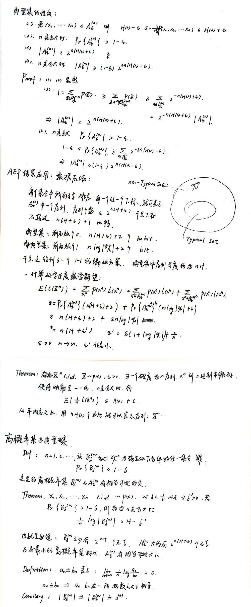

引言¶
在概率论中，我们学习过大数定律。信息论中与之类似的东西就是渐进均分性(AEP)，对于一个i.i.d的随机变量序列，我们有\(\frac{1}{n} \log \frac{1}{p(X_1,X_2\cdots,X_n)}\)近似于熵\(H\)。
当\(n\)很大的时候，对应的概率\(p(X_1,X_2\cdots,X_n)\)，近似等于\(2^{-nH}\)，这促使我们定义典型集（typical set）的概念。
渐进均分性的定义¶
Asymptotic equipartition property
若\(X_1,X_2\cdots,X_n\)为i.i.d序列且服从\(p(x)\)，则有
\[-\frac{1}{n} \log \frac{1}{p(X_1,X_2\cdots,X_n)} \to H(X)\]
证明对\(\log P(X_i)\)应用大数定律即可。
Typical Set
关于\(p(x)\)的典型集\(A_{\epsilon}{(n)}\)被定义为满足下面性质的序列\((x_1,x_2,\cdots,x_n)\)的集合
\[2^{-n(H + \epsilon)} \leq p(x_1,x_2,\cdots,x_n) \leq 2^{-n(H -\epsilon)}\]
根据渐进均分性，我们可以证明下列关于典型集的性质
